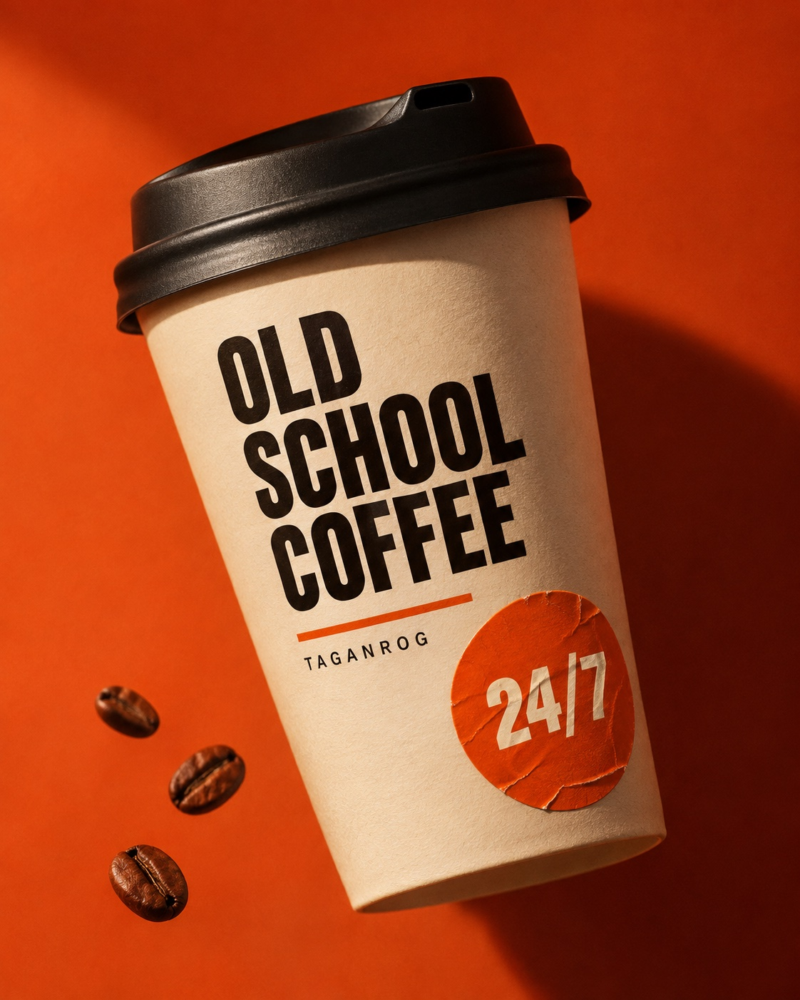
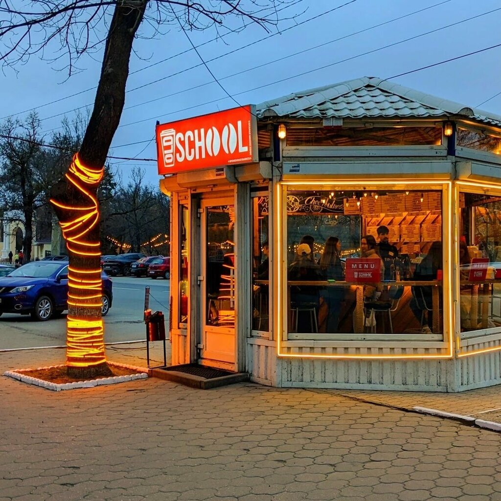

ТАГАНРОГ. НА СВОЕЙ ВОЛНЕ.
КОФЕ.В ТВОЁМРИТМЕ
Ранним утром. После долгого дня.
И когда весь город уже спит.
С собой, с друзьями, с удовольствием.

ДЕНЬ И НОЧЬ24/7УВИДИМСЯ ЗА КОФЕ
твой ежедневныймаленький ритуал
МАЛЕНЬКАЯ КОФЕЙНАЯ ПОДСКАЗКА
КАКОЙ У ТЕБЯ ПЛАН?

ПЕТРОВСКАЯ, 89 · ТАГАНРОГНАШЕ МЕСТО ↗
ДОБРОБЫТЬ
СВОИМ.
02 / БОЛЬШЕ, ЧЕМ КОФЕ НАВЫНОС
ГОРОД МЕНЯЕТ
РИТМ.
МЫ РЯДОМ.
Есть места, куда не нужен особый повод.
Достаточно захотеть кофе.
По дороге на работу, между встречами или во время вечерней прогулки. Old School Coffee — твоя знакомая остановка в Таганроге.
01
Забежать за любимым
↗02
Встретиться со своими
↗03
Побыть в своём ритме
↗ДЛЯ ЖАВОРОНКОВ. ДЛЯ СОВ. ДЛЯ ТЕБЯ.
У ХОРОШЕГО КОФЕ
НЕТ «СЛИШКОМ ПОЗДНО».
Точки с режимом 24/7 — для ранних планов
и разговоров, которые затянулись.
03 / ВСТРЕТИМСЯ В ГОРОДЕ
ТВОЙ КОФЕ.
ГДЕ-ТО РЯДОМ.
Выбирай удобную точку.
А повод для прогулки уже есть.
OLD SCHOOL COFFEE
Петровская, 89
За кофе перед прогулкой по парку. Или после.
Построить маршрут ↗Открыть в Яндекс Картах ↗Режим работы — по открытым карточкам кофеен. Перед поездкой можно проверить выбранную точку на карте.